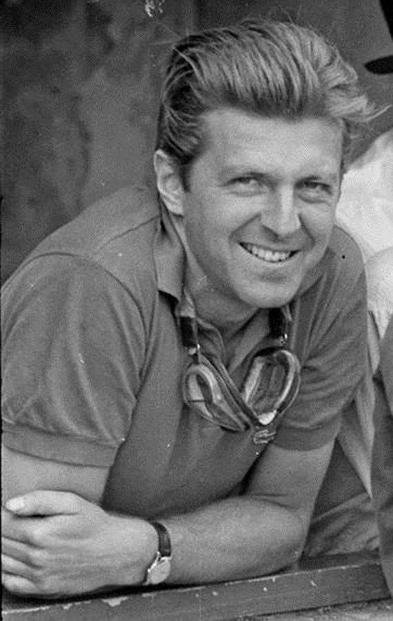

Wolfgang von Trips - Monza 1961
One of the worst tragedies in F1 history. Von Trips was battling for the title with teammate Phil Hill when his Ferrari, after making contact with Jim Clark, went airborne and crashed into the crowd. Von Trips and 14 spectators were killed.